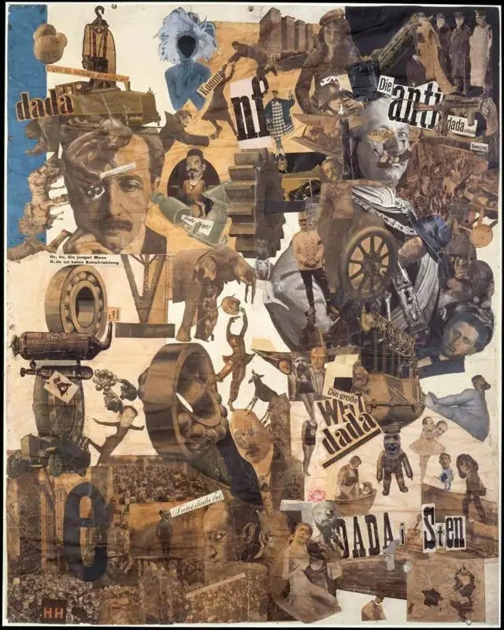
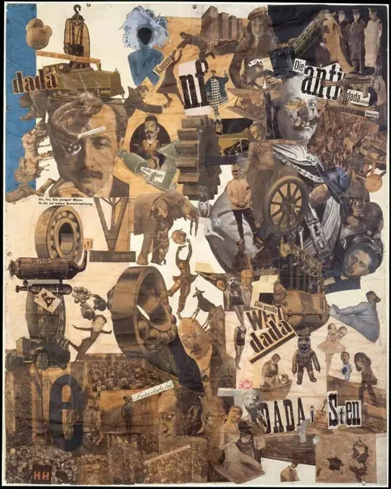
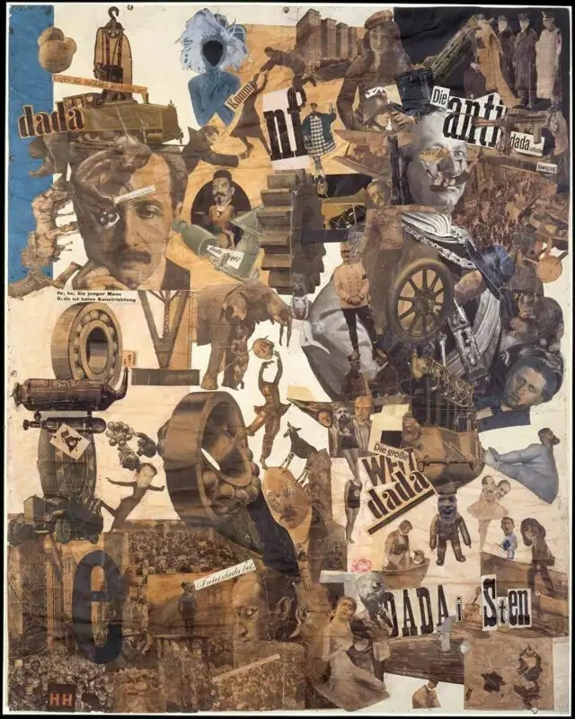

Digital Art Fundamentals
CSULA, Spring 2026

In the 1960s, artist and educator Corita Kent asked her students to collectively reimagine what a learning environment could be. Their contributions helped form the Immaculate Heart College Art Department Rules (commonly referred to as “Ten Rules”) and was posted on the wall of the school for students, teachers, and basically everyone.
I always come back to this set of rules when starting a new class. Each time I'm reminded of something useful, for teaching, for my own practice. Let's read it together now.
The last line, There should be new rules next week,
alludes to the idea that the classroom is always shifting and growing, that there are new rules to be made, more ways to learn and teach. That this list was created with her students is an example of Corita’s philosophy that students make the class just as much as the teacher. She plainly says it here:
You aren't needed to be there to get grades or pass the course—you are needed to help make the class. So the structure is there for you and you also are the structure; your particular gifts help shape it.
[←] Corita was a self-taught screen print artist, and her artwork reflects her own spiritual expression, often containing messages of love and peace. During the social movements of the 60s and 70s, Corita's work became more political, advocating for civil rights, and protesting the American bombing of Vietnam.
If we learned anything from the pandemic and the Black Lives movement, it is that community-building is critical for a functioning democracy. As we navigate what it means to “make” a class, it’s important to emphasize that the classroom does not exist in some bubble that is separate from what’s going on outside, in our communities, across the country, during an active genocide and climate change. Let’s also not forget that everyone holds the right to education regardless of immigration status, gender, and income. Showing up to class every day may as well be a radical act.
Week 2: PhotoshopMuch of the photomontage or collage work created by Dadaists has an edgy, aesthetic quality: Words and images overlap, clippings are roughly cut and pasted, aiming for chaos over logic. The photographs are sourced from from inexpensive, oridinary materials, such as newspapers and magazines. Instead of painting a blank canvas, the role of the artist was transformed into that of a collector of raw data and an assembler of new messages using materials of mass communication. These images are meant to demonstrate a sense of rebellion against art, disobedience of the status quo and collective authorship.
[←] This 1919 photomontage by Hannah Höch is titled Cut with the Dada Kitchen Knife Through the Last Weimar Beer-Belly Cultural Epoch in Germany. The German artist's feminist views are expressed through the title of the artwork. Höch renames the scissors that were used to cut out photographs and printed words as the kitchen knife, alluding to an object that is typically related to women. Glued together are images of film stars, dancers, artists, and figures like Karl Marx and Albert Einstein. In the bottom right, there is a map of the European countries where women had the right to vote. source